Construcción del RENA-BOT
En esta sección aprenderá a ensamblar paso a paso el RENA-BOT Estándar, desde la preparación del chasis hasta la primera prueba de movimiento.
Nota
Se recomienda realizar el armado en un área amplia y bien iluminada. Mantenga organizadas las piezas y herramientas para facilitar el proceso.
Inventario de piezas y herramientas
Lista completa de componentes incluidos en el kit:
N° |
Elemento |
Cantidad |
Imagen de referencia |
|---|---|---|---|
1 |
Chasis |
1 |
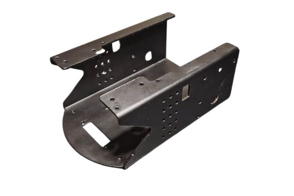 |
2 |
Soporte ultrasónico |
1 |
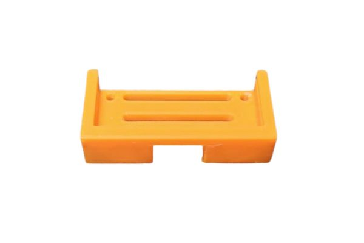 |
3 |
Guardafangos |
2 |
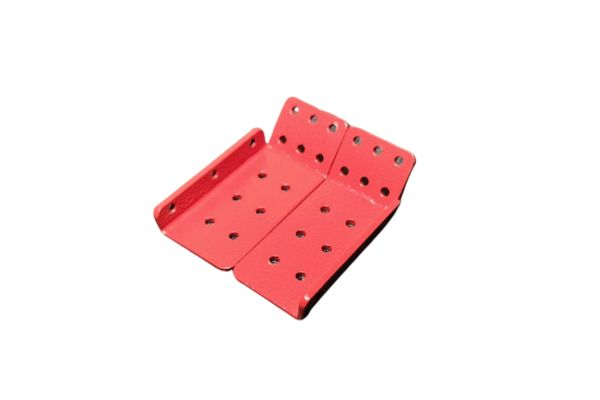 |
4 |
Rueda loca |
2 |
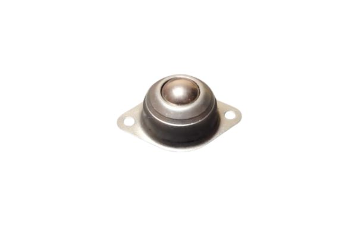 |
5 |
Motores DC |
2 |
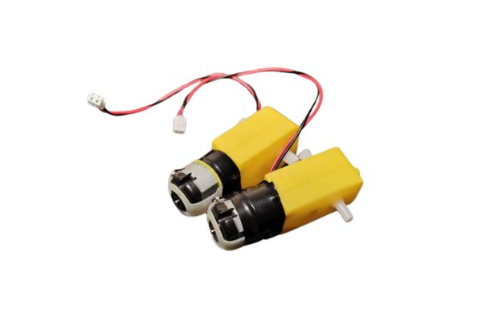 |
6 |
Llantas |
2 |
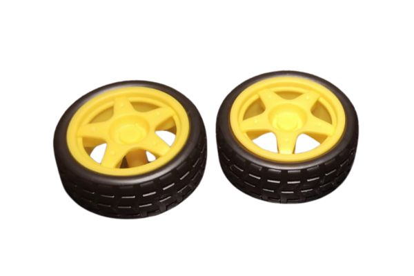 |
7 |
Frente |
1 |
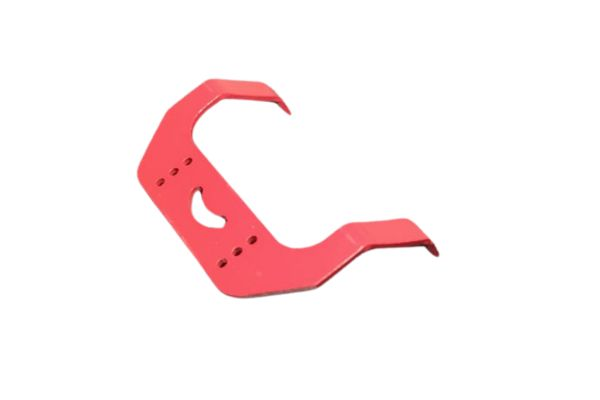 |
8 |
Soporte Servomotor |
1 |
|
9 |
Acople Gripper |
1 |
|
10 |
Tornillos M3 X 10 |
20 |
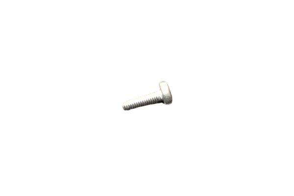 |
11 |
Tornillos M3 X 30 |
4 |
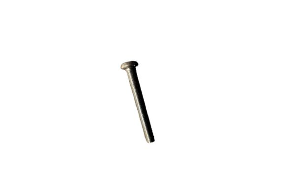 |
12 |
Tuercas M3 |
25 |
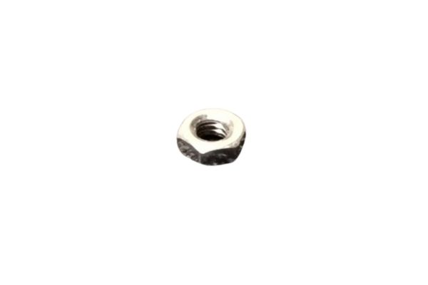 |
13 |
Separadores plásticos M3 x 12 |
4 |
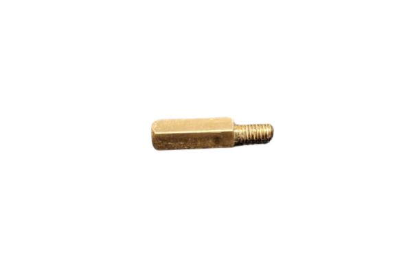 |
14 |
Separadores plásticos M3 x 5 |
4 |
|
15 |
Protectore de circuito |
1 |
|
16 |
Placa de control |
1 |
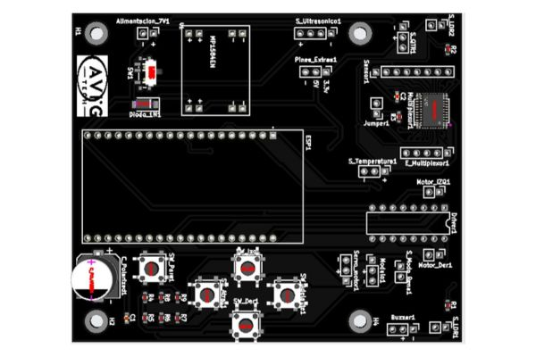 |
17 |
Sensor QTR8 |
1 |
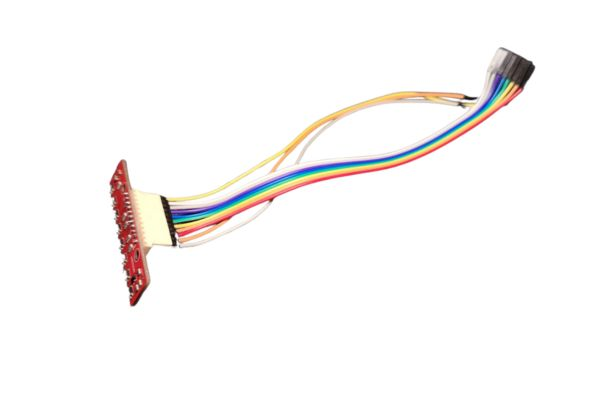 |
18 |
Sensor Ultrasónico |
1 |
|
19 |
Tapa Ultrasónico |
1 |
|
20 |
Servomotor sg90 |
1 |
|
21 |
Hélice Servomotor |
1 |
|
22 |
Buzzer |
1 |
|
23 |
Batería |
1 |
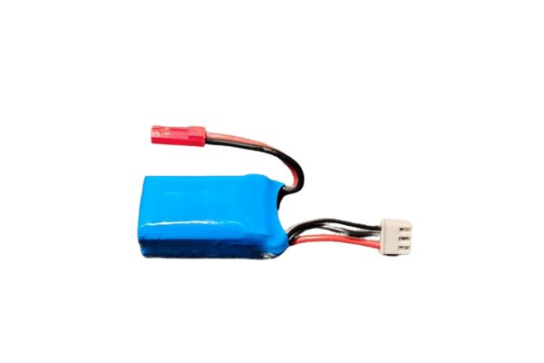 |
{kind=link}
{kind=link}
{kind=link}
{kind=link}
{kind=link}
{kind=link}
{kind=link}
{kind=link}
{kind=link}
{kind=link}
{kind=link}
{kind=link}
{kind=link}
{kind=link}
Herramientas necesarias:
Destornillador tipo estrella.
El RENA-BOT puede ser armado de 2 formas diferentes, 1. Clásica y 2. Versión Manipulador.
Modo Clásico
El modo clásico del RENA-BOT crea un modelo de robot móvil diferencial.
Guía de armado:
{kind=link}
Modo Manipulador
La versión manipulador del RENA-BOT utiliza los Guardafangos como piezas del gripper que permiten transportar objetos.
Guía de armado:
Revisión final
Checklist de verificación:
Todas las piezas atornilladas.
Conexiones firmes y sin falsos contactos.
Ruedas giran libremente.
Prueba básica de movimiento
Encendido inicial.
Verificación de motores.
Práctica de movimiento libre.
Revisa la sección Práctica de movimiento libre.
Truco
Si un motor no gira, revise las conexiones en el driver y confirme que la batería tenga carga suficiente.